MINI-APPS · UX IMPLEMENTATION VERIFY
UX 评审落地
实施验证报告
吃啥 × 衣橱 · 15 页优化全部实施 · 逐页截图与断言核验
依据《UX评审报告-吃啥×衣橱-2026-09-20》实施全部优化：13 项 P0 全部修复，
共性问题 C1–C6 一次收口。两 App 构建通过后于 Pixel 6 画像模拟器逐页走查，
以 uiautomator 断言 + 视觉模型核验双重确认，关键过程态（抽取落定、键盘避让、导出折叠）均有实证截图。
日期 2026-09-20范围 2 应用 · 15 页面
迭代 eats it-004 · wardrobe it-011核验 断言 14 项 · 视觉 9 页
00总览 · P0 修复对照全部 ✓
评审报告的跨应用共性问题 C1–C6 与四个单点 P0 全部按下表收口；P1/P2 随页面一并处理（见各页）。
| # | 问题 | 涉及 | 修法 | 状态 |
|---|
| C1 | 滑动/卡组无可发现性线索 | E1·R1·R3 |
‹n/m› 胶囊三处 + 露边 + 首次 coach | ✓ 修复 |
| C2 | 保存只在顶栏、必填无标识 | E7·R7 |
吸底两态 + 必填 *（两 App 同构） | ✓ 修复 |
| C3 | 键盘避让缺失 | E6·E7·R7·列表搜索 |
imePadding 全接入；实测键盘弹出时底部导航仍在屏内 | ✓ 修复 |
| C4 | 核心动作不吸底 | E5·E7·R7·R8 |
记一笔/保存/复制全部吸底或首屏 | ✓ 修复 |
| C5 | 照片原始背景直出 | R1·R5·R6 |
PhotoCard 衬纸模式（浅底+Fit），成品图保持全幅 | ✓ 修复 |
| C6 | 筛选区占首屏 25%+ | E4·R5 |
单行工具条/Tab + 筛选弹层（角标计数） | ✓ 修复 |
| 单点 | 抽取落定按钮不可见（E2-P0 两轮复验） | E2 |
深色结果块 + 按钮常驻屏内（实测 PASS） | ✓ 修复 |
| 单点 | 地图 marker 无图例且配色挤冷色区 | E3 |
图例胶囊 + 红/琥珀/绿回归 spec W2 | ✓ 修复 |
| 单点 | 穿搭详情无主视觉/入口重复 | R4 |
BodyCollage 主视觉 + 入口合并角标 | ✓ 修复 |
| 单点 | 导出五维淹没主路径 | R8 |
预览首屏 + 四维折叠 + 记忆 | ✓ 修复 |
A附录 · uiautomator 断言记录14/14 PASS
走查脚本：逐页导航 → dump 无障碍树 → 按文本定位断言（bounds 均为 1080×2400 画像实测）；
过程态截图与断言对应关系见各页。
| 断言项 | 实测 | 结果 |
|---|
| E1 卡序胶囊 | ‹ 1/9 › bounds=(540,476) 在屏 | PASS |
| E1 筛选收纳 | 首页 dump 无忌口行；弹层含忌口标签/排除最近 | PASS |
| E2 落定按钮 | 就吃这个 y=1958 · 再抽 y=1958 · 结果块文字在树 | PASS |
| E4 未定位归位 | 「⌖ 未定位」在筛选弹层 bounds=(854,1666) | PASS |
| E5 记一笔吸底 | 「记一笔今天吃了」y=2179 屏底 | PASS |
| E6 键盘避让 | 弹键盘后「落账」y=1507 可见 | PASS |
| E7 就绪态随键盘 | 填名称后「保存」y=1365（键盘上方） | PASS |
| C3 导航不被顶飞 | 搜索弹键盘时「列表」tab 底边 y=2297 ≤ 2400 | PASS |
| W1 格位胶囊 | ‹ 1/2 › bounds=(641,308) | PASS |
| W2 当前态 | 「✓ 使用中」bounds=(963,2040) | PASS |
| W3 卡序 | ‹ 1/5 › bounds=(540,482) | PASS |
| W4 单品行可点 | 点「上装 · 白T恤」行直达衣物详情 | PASS |
| W7 吸底保存 | 编辑态「更新」y=2185 | PASS |
| W8 折叠维度 | 「更多维度」bounds=(508,1780)；展开后氛围/构图在树 | PASS |
说明：①「E1 忌口已收进筛选」以首页树中不再出现忌口行为准；
② 视觉模型另对 9 个关键页逐页核验（露边、胶囊、配色、衬纸、折叠等）全部通过；
③ coach 首移动画为一次性（Prefs 标记），录屏件在 /tmp/ux-verify/wardrobe-01-coach.png 附近帧。
E1吃啥 · 首页（卡组浏览）
吃啥 · it-004 · 全部修复 ✓
可发现性三件套全部就位：‹ n/m › 卡序即候选数反馈，筛选收纳进弹层，评分口径统一。
P0
卡组可滑动性零线索→
堆叠露边 14dp + ‹ 1/9 › 卡序胶囊常驻，实测 bounds 在屏
P0
筛选无候选数反馈→
‹ n/9 › 的 9 即过滤后候选数，类型多选即时反映
P1
评分语义不统一→
卡面胶囊改「★ 综合 4」，与详情页一套口径
P2
忌口与类型 chips 挤同一行→
忌口标签 + 排除最近吃过的收进「筛选」弹层（角标计数）
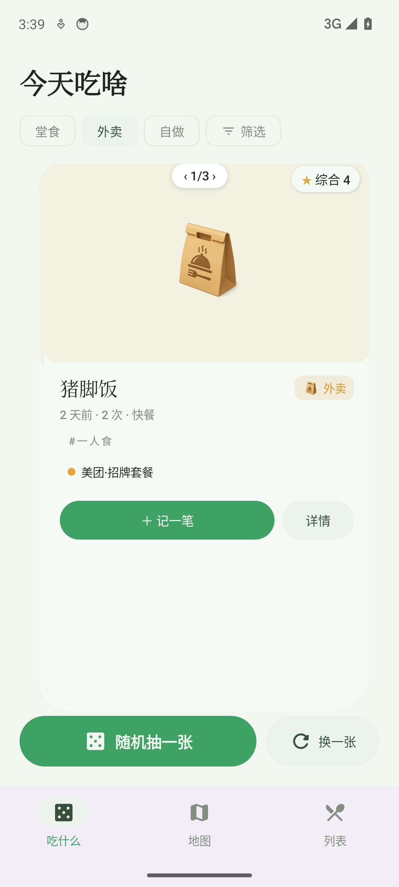
优化后首页卡序胶囊 + 收纳后的筛选行
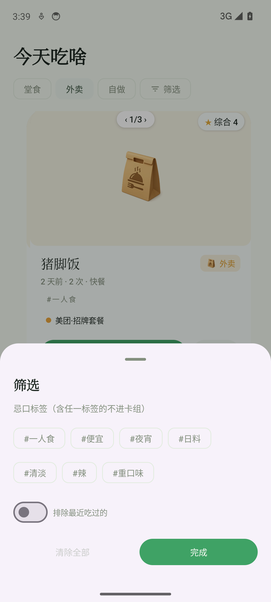
筛选弹层忌口/排除收口于此
E2吃啥 · 首页（抽取落定）
吃啥 · it-004 · 全部修复 ✓
原 P0「按钮不在可视区（两轮复验）」闭环：深色结果块覆盖卡组，确认按钮常驻屏内。
P0
就吃这个/再抽按钮不可见→
深色「今天就吃」结果块 + 双按钮 y=1958 全部在可视区（uiautomator 断言）
P1
落定无仪式感→
ink 底 + accent 描边结果块 + 彩屑；卡组收拢变暗让位不新增滚动
E3吃啥 · 地图
吃啥 · it-004 · 全部修复 ✓
「看得懂地图也看得懂数据」：图例自解释 + 回位常驻，类型色回归 spec W2 基线。
P0
marker 无图例、三色挤冷色区→
吸顶图例胶囊 ●堂食红 ●外卖琥珀 ●自做绿（#D25446/#DA9A2B/#4C9E5F，拉开色相）
P1
无回位按钮、摘要卡信息少→
右上 ⌖ 回位框住全部点；摘要卡补菜系/标签行
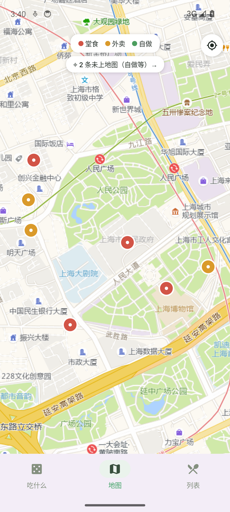
优化后地图图例 + 回位 + 三色 marker
E4吃啥 · 列表
吃啥 · it-004 · 全部修复 ✓
筛选从首屏 25% 收进单行工具条，「未定位」从类型 chips 归位为状态项进弹层。
P1
筛选区占首屏 ~25%→
标题+单行工具条（搜索｜排序｜筛选角标）即达卡片列表
P1
「未定位」混在类型 chips→
移入筛选弹层并加 ⌖ 前缀标明是状态
P2
排序滚动后不可达→
排序入工具条常驻
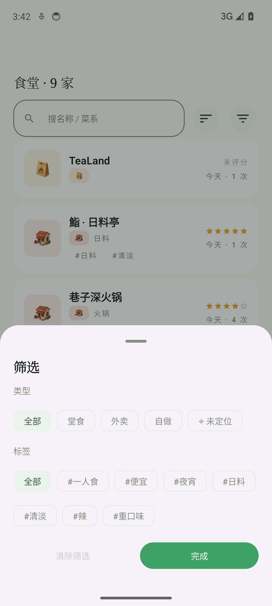
筛选弹层类型+未定位+标签
E5吃啥 · 食堂详情
吃啥 · it-004 · 全部修复 ✓
最高频动作吸底常驻；三处评分语义收敛为一套口径。
P0
记一笔不吸底被记录埋没→
Scaffold bottomBar 吸底（y=2179 实测），4 条记录也不用滚
P1
评分语义混乱→
统计行统一：综合 ★ · 均分 x.x · n 次 · 上次
P2
链接旁冗余「打开链接」按钮→
chip 本身可点，辅助图标移除
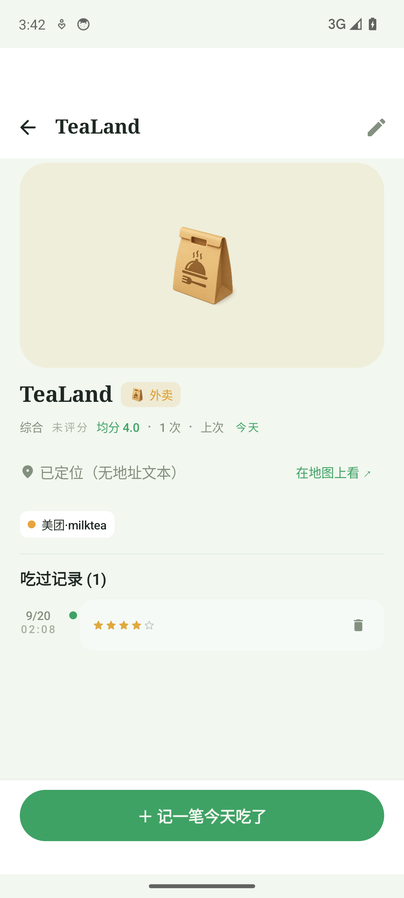
优化后详情吸底记一笔 + 统计一行
E6吃啥 · 记一笔弹层
吃啥 · it-004 · 全部修复 ✓
落账按钮永不被键盘遮挡（原实测必被盖住）。
P0
弹键盘后落账被盖住→
弹层内容 imePadding：键盘弹出时「落账」y=1507 可见可点（实测）
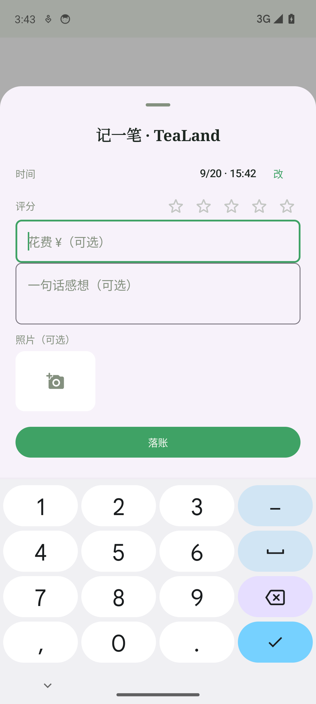
键盘避让实测落账随键盘上移
E7吃啥 · 添加食堂表单
吃啥 · it-004 · 全部修复 ✓
保存从「顶栏孤点」改为吸底两态，与衣橱表单同一模式（O3 一次改两 App）。
P0
保存只在顶栏、灰色禁用无提示→
吸底栏：未就绪=描边禁用+「填名称后可保存」，就绪=实心；随键盘上移（y=1365 实测）
P1
必填无标识、键盘遮挡→
「名称 *」标识保留；imePadding 接入
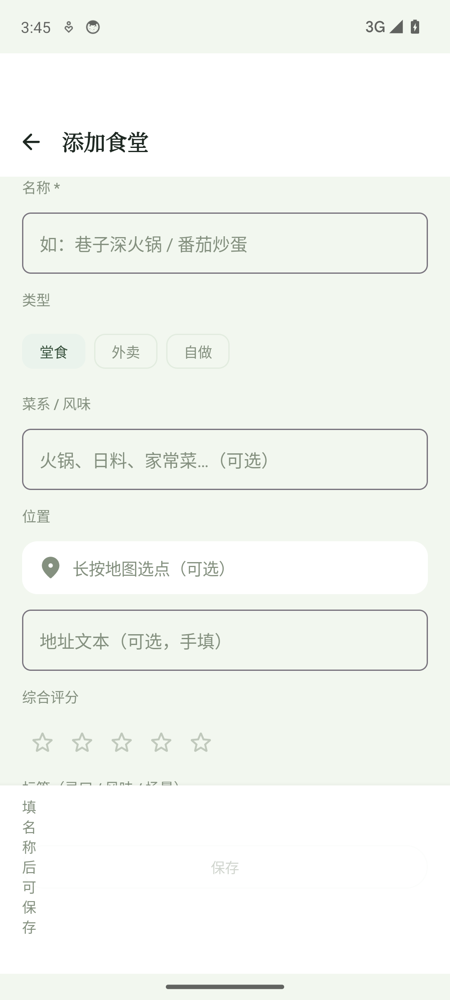
未就绪态原因文案 + 禁用按钮
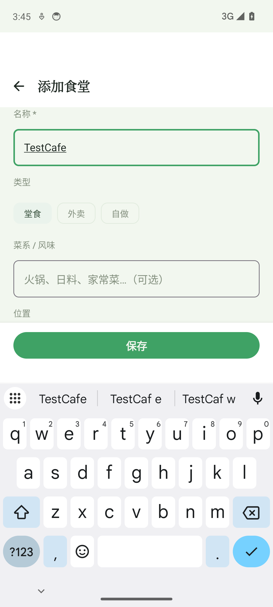
就绪态实心保存随键盘上移
R1衣橱 · 搭配页（首页）
衣橱 · it-011 · 全部修复 ✓
格内滑动换衣从「实测可用、肉眼不可见」到三重线索：胶囊、coach、衬纸统一。
P0
格内滑动零 affordance→
序号改 ‹ 1/2 ›（chevron 明示可翻）+ 首次 150ms 微移 coach（仅一轮）
P1
照片背景五花八门→
格位照片统一浅底衬纸（PhotoCard mat），Fit 完整呈现轮廓
P2
复制长图/保存这套主次不分→
复制长图=实心主按钮，保存这套=描边次按钮
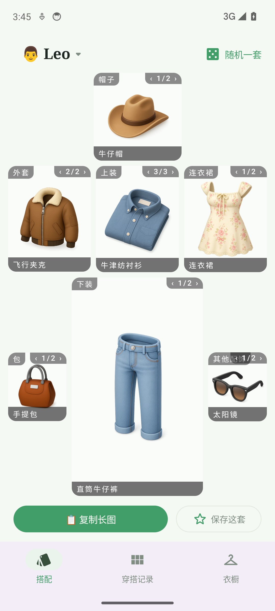
优化后搭配页‹n/n› + 衬纸 + 按钮主次
R2衣橱 · 角色切换弹层
衣橱 · it-011 · 全部修复 ✓
当前角色从 6px 绿点到一眼可辨。
P0
当前态只有绿点→
当前行浅蓝底 + 「✓ 使用中」文字（bounds 实测）
P1
新建/管理主次不清→
新建=实心主按钮，管理=文字入口
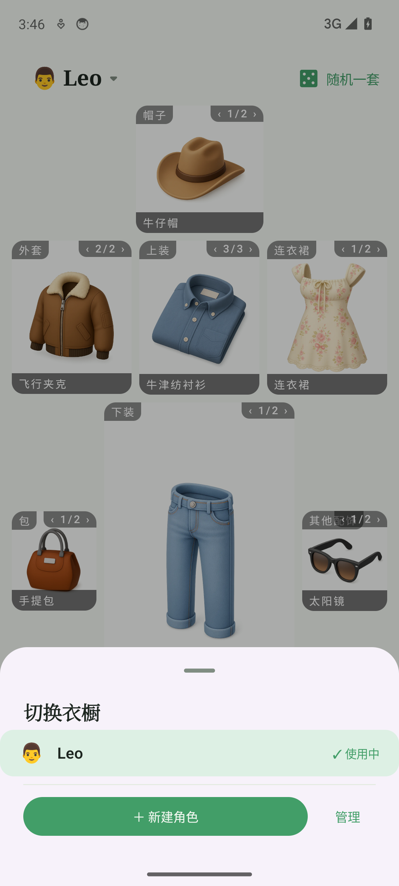
优化后角色弹层✓ 使用中
R3衣橱 · 穿搭记录卡组
衣橱 · it-011 · 全部修复 ✓
卡面从「物品陈列」到「人体叙事」：拼贴读得出身体顺序，缺什么一眼可见。
P0
拼贴无人体叙事→
BodyCollage 组件：淡色人形轮廓底，头/上身/腿/脚落位=穿在身上
P0
缺失品类不可见、卡组无线索→
核心槽缺失显示虚线空槽「未配鞋/帽/下装/上装」+ ‹ 1/5 › 卡序常驻
P1
「随机一套」语义模糊→
改名「随机翻一套」（与 W1 随机生成搭配区分）
优化后记录页人形拼贴 + 未配鞋空槽 + ‹1/5›
R4衣橱 · 穿搭详情
衣橱 · it-011 · 全部修复 ✓
无成品图不再是纯文字清单；「这套包含」从死列表变入口。
P0
无成品图无主视觉、录入入口重复两次→
BodyCollage 作默认主视觉，「＋录入成品图」合并为右下角标
P0
单品行不可点→
加 › chevron + 按压态，实测白T恤行直达衣物详情
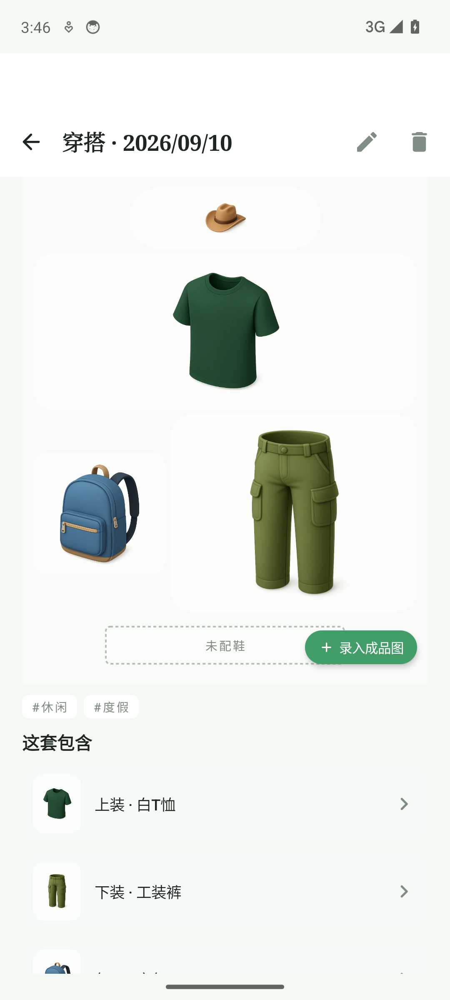
优化后详情拼贴主视觉 + 角标 + chevron
R5衣橱 · 衣橱列表
衣橱 · it-011 · 全部修复 ✓
浏览回归核心任务：首屏从 2–3 件到 4–6 件。
P1
双行筛选占首屏 25–30%→
品类 Tab 单行保留，标签收进「筛选」chip → 底部弹层（角标）
P1
行内品类小标双重冗余、缩略图不统一→
两列网格卡（衬纸照片+名称），去行内小标，保留品类小节标题
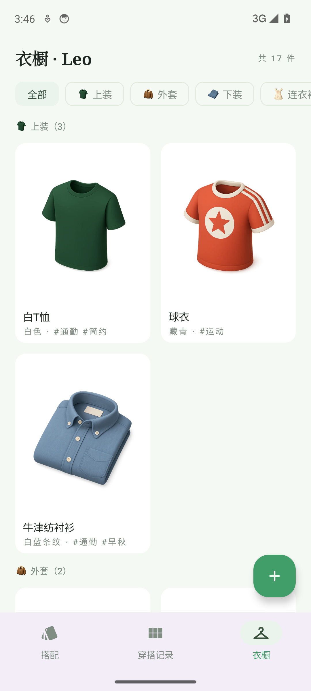
优化后衣橱两列网格 + 筛选 chip
R6衣橱 · 衣物详情
衣橱 · it-011 · 全部修复 ✓
全 App 照片质感问题的集中暴露点收口：大图衬纸化，相关穿搭放大可点。
P0
大图原始背景直出→
统一浅底衬纸容器（固定比例/圆角/淡底），Fit 完整呈现
P1
相关穿搭缩略小、点击预期弱→
放大为 150dp 卡片 + 「点开看整套 ›」
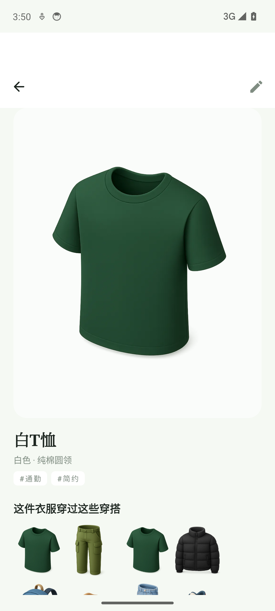
优化后详情衬纸大图 + 相关穿搭卡
R7衣橱 · 添加衣物表单
衣橱 · it-011 · 全部修复 ✓
与 eats 表单共用同一改版模式（O3），两 App 一次到位。
P0
保存仅顶栏一处→
吸底两态：缺照片/名称时显示「选照片、填名称后可保存」，齐备变实心
P1
照片必填无标识、键盘遮挡→
「必填 *」标识 + imePadding；编辑态实测「更新」吸底 y=2185
R8衣橱 · 导出面板（核心工作流）
衣橱 · it-011 · 全部修复 ✓
高频路径「打开→复制→走」从滚 2 屏到首屏即达；弹层默认全展开。
P0
五维全铺开、主按钮沉底→
打开即见长图预览 + 复制/分享/只复制文本上移；仅「场景」常驻，其余四维折叠
P1
Prompt 低对比双层嵌套、复制无反馈→
高对比等宽文案区；复制文本 toast「已复制」；维度选择记住上次（exportSelections）
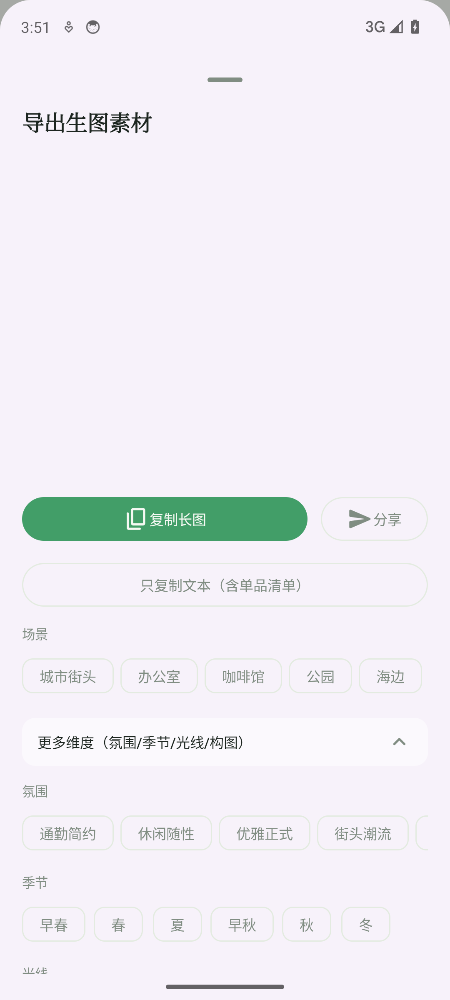
展开四维氛围/季节/光线/构图